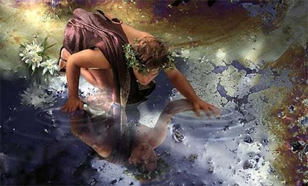
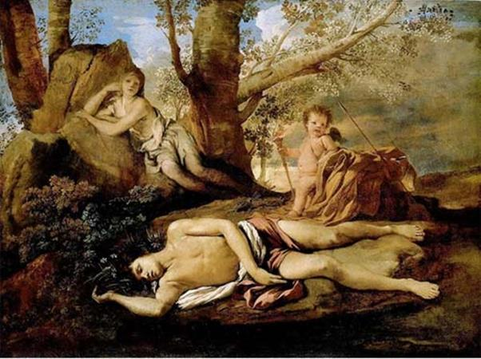

Tình yêu là báu vật của nữ thần Aphrodite ban cho cả vũ trụ và thế gian, thần thánh và người trần. Tình yêu cũng là quyền lực của nữ thần Aphrodite điều khiển vũ trụ và thế gian làm cho vạn vật sinh thành, giao hòa, gắn bó. Chống lại quyền lực Aphrodite chẳng có mấy ai, ngay cả thần Zeus cũng không dám, hay nói đúng hơn, cũng không muốn chống lại quyền lực của vị nữ thần Tình yêu và Sắc đẹp, một quyền lực không gây nên những đòn khủng khiếp như cây búa giáng sấm sét của thần Zeus hay cây đinh ba gây nên những trận cuồng phong lay chuyển mặt đất của thần Poséidon nhưng ai ai cũng phải khuất phục. Một vài vị thần chống lại thì... thôi cũng được, bởi vì đó là thần. Nhưng con người mà chống lại thì quả thật là một sự xúc phạm, một sự thách thức đối với nữ thần Aphrodite. Tất nhiên Aphrodite không tha cái trọng tội đó.
Narcisse là kẻ phạm tội khinh thị quyền lực của nữ thần Aphrodite. Chàng là con của thần Sông-Céphise và tiên nữ Nymphe Liriope. Trên thế gian này khó mà tìm được một người con trai nào lại đẹp trai như Narcisse. Chỉ có thể nói vắn tắt là Narcisse đẹp lắm, đẹp đến nỗi các thiếu nữ xinh đẹp nhất đều phải ghen tỵ, đẹp đến nỗi gây ra biết bao vụ tương tư cho các cô gái. Không thể nhớ được đã có bao thiếu nữ, người thì thầm lặng tế nhị, người thì bộc bạch lộ liễu, bày tỏ tình cảm với chàng. Nhưng tiếc thay, Narcisse đều khước từ tình cảm của họ với một thái độ kiêu kỳ và lạnh nhạt khiến họ cảm thấy bị xúc phạm vì không nhận được ở chàng một tấm lòng thông cảm, trân trọng ưu ái đối với mình, nhất là đối với phụ nữ. Trong những thiếu nữ thầm yêu trộm nhớ Narcisse có nàng Écho121. Nàng có một số phận rất đáng thương đến nỗi khi nghe kể thì mười người nghe là đến chín người không cầm được nước mắt.
Écho là một tiên nữ Nymphe thường sống trong núi rừng với loài vật hoang dã. Nàng là thị nữ của Artémis, vị nữ thần Xạ thủ có cây cung bạc. Trong một lần giận cá chém thớt, Héra đã nguyền rằng Écho chỉ được quyền nói lại điều người khác nói và chỉ được phép nói lại những lời nói cuối cùng. Chuyện xảy ra như sau: Écho có tài kể chuyện và cũng có tài moi chuyện, cho nên nàng ngồi đâu cất lời lên là mọi người xúm đến, nghe nàng kể chuyện. Thôi thì đủ thứ chuyện ông này bà nọ, cậu ấy cô kia v.v và v.v. Chuyện gì Écho cũng biết và chuyện gì nàng kể ra cũng lý thú, hấp dẫn đến nỗi người nghe không dứt ra được mà về lo công lo việc. Dạo ấy thần Zeus đang có tình ý với một thiếu nữ nào đó. Nữ thần Héra để ý và theo dõi. Và nàng, cứ xem cung cách hai người nói chuyện với nhau, đầu mày cuối mắt “hai bên cùng liếc”, thì nhất định thể tất là “hai lòng cùng ưa”. Nàng chăng bẫy để bắt quả tang Zeus một phen. Phải chỉ tay day trán, hai năm rõ mười thì Zeus mới không chối cãi được. Héra vờ đi vắng. Lợi dụng cơ hội tốt đẹp, Zeus bèn đón người thiếu nữ về để được tự do thổ lộ tấm can tràng. Héra định bụng bất chợt sẽ quay về nhà để... để làm cho ra nhẽ một phen. Nhưng lúc nàng vừa cất bước thì gặp ngay Écho đang ngồi nói chuyện với chị em bạn. Nàng thử ghé vào ngồi nghe một lát. Nào ngờ nghe hết chuyện này sang chuyện nọ, chuyện nọ xọ chuyện kia, dây cà ra dây muống, nàng không nhớ đến việc của mình nữa. Đến lúc sực nhớ ra chạy vội về nhà thì hỡi ôi... “phòng không lạnh ngắt như tờ”! Mưu kế của nàng hỏng sạch. Nàng tức đến điên người. Nhẽ ra phải trách mình mới đúng, nhưng không, Héra đổ lỗi tất cho Écho. Giận cá chém thớt, đó là thói xấu của Héra, Héra nguyền rủa Écho. Nữ thần phán truyền cho Écho phải chịu một hình phạt:
- Từ nay trở đi ngươi sẽ mất đi tiếng nói. Ngươi sẽ câm. Ngươi sẽ không dùng được tiếng nói để kể ra những câu chuyện làm mất công mất việc của người khác.
Từ đó, Écho sống trong rừng núi làm bạn với cỏ cây, muông thú.
Bữa kia Narcisse trong một cuộc đi săn không may lạc bước vào rừng sâu. Trong khi quanh quẩn tìm đường thì Écho từ một lùm cây xa xa đã trông thấy chàng. Nàng say sưa ngắm nhìn chàng thanh niên tuấn tú, khôi ngô có một vẻ đẹp hiếm có. Nàng muốn nói với chàng những lời nói vuốt ve âu yếm, nhưng khổ thay nàng chẳng cất được lên lời. Cứ thế, nàng theo đuổi từng bước đi của Narcisse. Narcisse bỗng nhận thấy có dấu chân người trên đường. Chàng cất tiếng gọi thật to:
- Các bạn ơi, tôi đây! Lại đây! Tôi ở đây!
Écho nhắc lại:
- Tôi ở đây!
Narcisse ngạc nhiên, lại gọi:
- Tôi ở đây, lại đây!
Écho nhắc lại:
- Lại đây!
Narcisse ngơ ngác nhìn quanh, rồi lại gọi:
- Lại đây, nhanh lên! Mình đợi, lại đây!
Écho sung sướng reo lên:
- Mình đợi, lại đây!
Từ trong một lùm cây Écho bước ra, tràn ngập xúc động. Nàng đưa tay ra cho Narcisse đón lấy. Nhưng Narcisse quay ngoắt đi với một vẻ mặt khó chịu:
- Không phải rồi! Chàng nói. Ta sẽ chết trước khi ta hiến dâng trái tim cho tình yêu!
Écho run rẩy nhắc lại:
- Ta hiến dâng trái tim cho tình yêu.
Nhưng Narcisse đã bỏ đi không một lời chào từ biệt. Écho bàng hoàng, đau đớn, hổ thẹn và càng nghĩ nàng càng đau đớn, càng cảm thấy bị xúc phạm, bị đối xử một cách tàn nhẫn. Người xưa kể, từ đó trở đi Écho sống giấu mình ở trong hang, chẳng buồn ra ngoài đón ánh sáng mặt trời rực rỡ giữa đồng nội hay vui chơi với các bạn trong suối mát, gió hiền. Nàng càng héo hon ủ rũ đến nỗi thân thể hao mòn gầy yếu hẳn đi. Và chỉ còn tiếng nói run rẩy, xúc động, buồn bã là của nàng, người thiếu nữ Écho chân thành nhưng số phận thật đắng cay, oan trái.
Narcisse vẫn cứ tiếp tục sống với vẻ kiêu kỳ và lạnh nhạt đối với những tấm lòng chân thành, nhiệt tình và cởi mở. Điều đó khiến cho các thiếu nữ căm ghét chàng. Một thiếu nữ, đúng hơn là một tiên nữ, bị Narcisse cự tuyệt tình yêu một cách thô bạo khiến cho lòng tự trọng bị tổn thương rất sâu sắc. Nàng bèn cầu khấn Aphrodite, nữ thần Tình yêu và Sắc đẹp và nữ thần Némésis, nữ thần Trả thù, trừng phạt Narcisse.
- Hỡi các nữ thần chí tôn kính! Xin các nữ thần hãy trừng phạt kẻ đã xúc phạm đến tình yêu chân thành của chúng con, đã làm chúng con bẽ bàng hổ thẹn, bằng một hình phạt xứng đáng! Xin các vị thần hãy làm con người kiêu kỳ và lạnh nhạt ấy suốt đời hắn chỉ yêu có hắn, hắn chỉ say mê, đắm đuối trong mối tình với bản thân hắn mà thôi.
Nữ thần Aphrodite chấp nhận lời cầu xin đó bởi vì Narcisse đã phạm thượng, khước từ báu vật mà Aphrodite ban cho loài người.
Vào một mùa xuân, Narcisse theo lệ thường vào rừng săn bắn muông thú. Sau một cuộc đuổi bắt con mồi chàng mệt nhoài khát khô cả cổ. Chàng tìm đến một con suối để giải khát. Đây rồi một con suối nước trong veo, mặt nước sáng láng như một tấm gương in hình cả mây trời, cây cối xuống lòng suối. Narcisse cúi đầu xuống mặt nước vụm hai lòng bàn tay lại để múc nước. Mặt nước hiện lên khuôn mặt tươi trẻ, xinh đẹp của chàng. Chàng ngạc nhiên, sung sướng: “Ta, ta đây ư? Trời ơi ta lại đẹp đến thế này ư?” Chàng vục nước đưa lên miệng uống. Mặt nước lay động, khuôn mặt chàng cùng với mảng trời xanh tan tác trong làn nước lung linh. Và rồi những hình ảnh ấy lại được mặt nước chắp nối lại nguyên hình như trước. Khuôn mặt xinh đẹp của chàng chập chờn hiện ra rồi dần dần lắng đọng lại. Chàng kêu lên: “Trời ơi, đẹp quá!” và thầm nghĩ: “Ta hiểu vì sao các cô ấy khổ đau, sầu não vì ta”. Narcisse cứ ngắm nghía khuôn mặt tuấn tú của mình nổi trên làn nước và suy tưởng. Càng ngắm nghía, chàng càng thấy mình đẹp, chàng càng yêu mình say mê, đắm đuối. Chàng đưa tay khuấy nước, mỉm cười vui đùa với mình. Một tình yêu mãnh liệt, sôi sục từ đâu bùng cháy lên trong trái tim chàng. Chàng muốn chế ngự nó, rời bước khỏi dòng suối, nhưng lạ thay có một sức mạnh vô hình nào giữ chân chàng lại, lưu giữ chàng lại. Chàng nhìn xuống khuôn mặt mình trên mặt nước với một niềm khát khao cháy bỏng. Chàng muốn trao cho khuôn mặt xinh đẹp đó một cái hôn nồng nàn. Nhưng chỉ vừa choàng vòng tay, cúi xuống là khuôn mặt đó tan tác, biến đi đâu mất. Chàng đứng lặng người, đau đớn, xót xa. Nhưng rồi khuôn mặt xinh đẹp lại hiện ra trên mặt nước. Narcisse lại mê mẩn trong mối tình câm với hình bóng của mình. Chàng nói thì thào với hình bóng của mình:
- Ta đã yêu ta với một tình yêu nồng cháy. Ôi, có lẽ tình yêu này sẽ đốt ta thành tro bụi mất thôi! Sao mà trái tim ta nung nấu một nỗi thèm khát ái ân như thế này!

Narcisse ngắm mình trong suối
Narcisse lại đưa tay ra ôm choàng lấy hình bóng của mình và muốn hôn tràn lên khuôn mặt xinh đẹp, thân yêu đó. Nhưng ba lần chàng chỉ vừa đưa vòng tay ra và cúi xuống là ba lần hình bóng chàng tan tác đi trên làn nước suối mát lạnh. Chàng thất vọng như xưa kia các cô gái thất vọng vì chàng. Cứ như thế lặp đi lặp lại mối tình đeo đuổi, đắm say nhưng không một chút hy vọng được đền đáp giữa Narcisse với hình bóng của mình chập chờn trên làn nước suối trong sáng như gương. Narcisse héo hon, ủ rũ vì mối tình tuyệt vọng. Nước mắt chàng lã chã tuôn rơi trên khuôn mặt và từng giọt, từng giọt nhỏ xuống mặt suối. Bóng hình chàng chập chờn, mờ ảo, lung linh khiến chàng càng nhớ nhung, sầu não. Narcisse như không thể chịu đựng được nỗi đau khổ tuyệt vọng giày vò chàng. Nàng Écho vẫn nuôi giữ mối tình với chàng, nhìn thấy hết cảnh tượng đó. Nàng đã từng đau khổ vì mối tình tuyệt vọng của mình vì thế khi thấy Narcisse tuyệt vọng, nàng lại đau khổ hơn nữa. Bỗng Narcisse kêu lên:
- Trời ơi, sao ta đau đớn quá thế này!
Écho đáp lại:
- Đau đớn quá thế này!
Narcisse đứng không vững nữa. Chàng lảo đảo nhìn theo bóng hình mình trên làn nước suối trong veo rồi ngã vật xuống bên bờ suối với tiếng nói yếu ớt, những tiếng nói cuối cùng của một nỗi đau khổ không thể chịu đựng được:
- Ta chết... Ta ch... ế... t đây! Xin vĩnh biệt.
Écho nghẹn ngào nhắc lại:
- Xin vĩnh biệt.

Narcisse chết, đầu ngả ra trên lớp cỏ xanh bên bờ suối, đôi tay giang ra chới với. Bóng đen trùm phủ lên mắt chàng. Từ trong rừng sâu các tiên nữ Nymphe đến ngồi bên xác chàng, khóc than thương tiếc cho chàng mất đi tuổi trẻ trong một mối tình tuyệt vọng, mơ hồ. Chẳng tiên nữ nào nuôi giữ mối oán hận với chàng nữa, một người con trai xinh đẹp lúc này chỉ là một cái xác không hồn. Nàng Écho lại càng khóc than đau xót hơn. Các tiên nữ Nymphe, sau khi khóc than đã chán bèn rủ nhau đi lấy hoa để về đắp cho chàng một nấm mồ. Nhưng khi họ từ rừng sâu đem hoa trở về thì thi hài chàng đã biến mất. Ở bờ suối, chỗ lớp cỏ xanh nơi đầu Narcisse ngả ra, mọc lên một bông hoa với vẻ đẹp lạnh lùng, kiêu kỳ. Hoa trắng muốt, hương thơm ngào ngạt, mọc lên từ cái chết của chàng trai xinh đẹp. Các tiên nữ Nymphe liền gọi là hoa thủy tiên.
Ngày nay trong văn học thế giới, Narcisse chuyển nghĩa chỉ: “người đẹp trai” hoặc “người đẹp trai kiêu kỳ”, mở rộng nghĩa chỉ “người có thói ngắm nghía mình rồi tự khen mình” hoặc “người kiêu căng”, “người tự phụ”. Còn Thói Narcisse (Narcissisme) là “thói tự khen mình”, “say mê với thành tích chiến công của mình đến tự kiêu tự phụ”, “ngắm nghía vuốt ve, phỉnh nịnh mình, đề cao mình”.
Lại có chuyện kể rằng nhà tiên tri Tirésias đã tiên báo số phận của Narcisse: tuổi thọ của chàng sẽ chấm dứt vào cái ngày chàng nhìn thấy khuôn mặt của mình. Một chuyện khác kể, không phải Narcisse chết vì mối tình tuyệt vọng với bản thân mình mà vì mối tình với người em gái giống chàng như hai giọt nước. Tuy thế thiếu nữ đó chẳng may mất sớm để lại cho Narcisse một nỗi buồn, luyến tiếc khuôn nguôi. Narcisse tưởng nhớ tới em, hằng ngày ra soi mình xuống suối. Càng soi mình, chàng càng thương nhớ người em gái bất hạnh. Cuối cùng chàng qua đời.
Huyền thoại Narcisse trên đây do Ovide viết lại trong tập Biến hóa, nghĩa là vào một thời kỳ muộn hơn sau này (thế kỷ I TCN). Như vậy hẳn rằng Ovide đã dựa vào những cội nguồn sớm hơn, sớm nhất phải từ sơ kỳ Hy Lạp hóa, để tái tạo câu chuyện một cách nghệ thuật, thơ mộng, cũng như sau này Apulée đã tái tạo chuyện Cupidon và Psyché. Ở đây bên cạnh hạt nhân cơ bản của câu chuyện là mối tình tuyệt vọng, các nhà nghiên cứu còn bóc ra cho chúng ta thấy lớp chuyện mang tính cụ thể-lịch sử của thời Hy Lạp hóa phản ánh chủ nghĩa cá nhân cực đoan. Cá nhân đã tách biệt mình ra với đồng loại, với thiên nhiên để trầm tư mặc tưởng trong thế giới nội tâm của mình. Và ý nghĩa giáo dục-đạo đức của câu chuyện là chủ nghĩa cá nhân đó bị trừng phạt, bị phê phán. Ý nghĩa này chỉ có thể có được ở vào một thời kỳ xã hội phát triển tới mức chủ nghĩa cá nhân trở thành một tai họa khủng khiếp trong xã hội. Tuy nhiên chúng ta không thể không ghi nhận quá khứ lịch sử xa xưa của câu chuyện: sự chuyển biến của những biểu tượng bái vật giáo về bông hoa sang cái đẹp được nhân hình hóa (Bông hoa ⇔ Người đẹp; Người đẹp ⇔ Bông hoa).